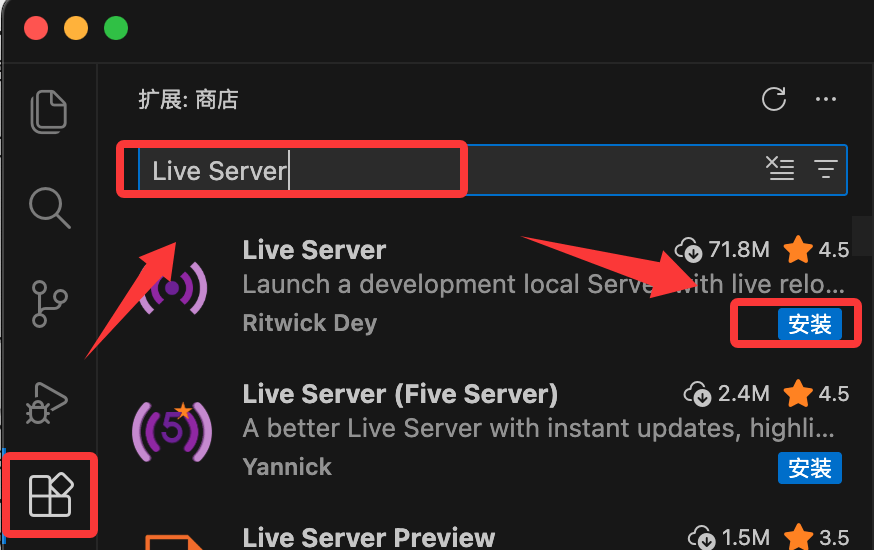
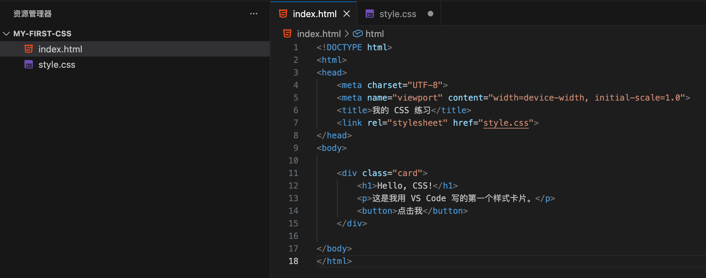
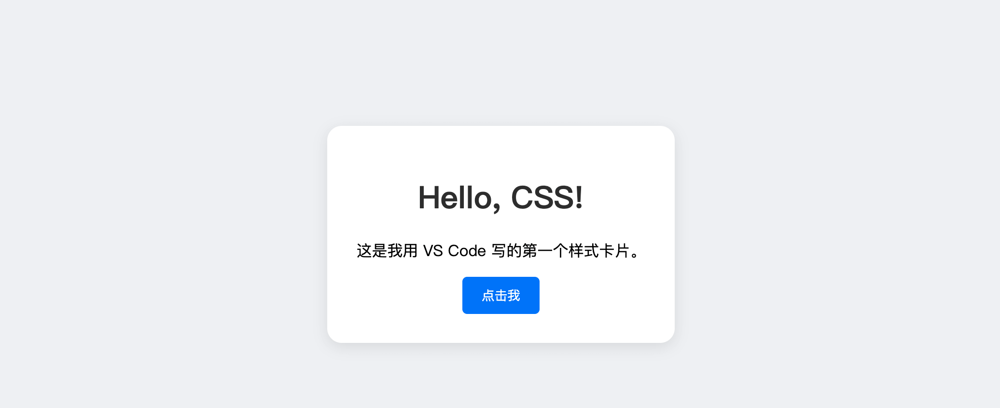

CSS 编辑器
プロフェッショナルなCSSエディタを使用してCSSを編集できます。よく使われるエディタをいくつか紹介します：
上記のソフトウェアの公式サイトから対応するソフトウェアをダウンロードし、手順に従ってインストールするだけです。
当社のオンラインエディタも使用できます：https://www.jyshare.com/front-end/61/
次に、VS Codeツールを使用してCSSファイルを作成する方法をデモします。
VS Code
Visual Studio Code（略称VS Code）は、Microsoftが開発し、Windows、Linux、macOSなどのオペレーティングシステムをサポートするオープンソースのコードエディターであり、エディターには拡張機能管理機能が組み込まれています。
VS Code インストールチュートリアル参考：https://www.runoob.com/vscode/vscode-tutorial.html
必須プラグイン（Extensions）のインストール：
VS Codeの左側のサイドバーにある四角いアイコン（拡張機能）をクリックし、以下の2つのプラグインを検索してインストールしてください。これらは初心者にとって非常に重要です：
- Live Server:ブラウザでWebページをリアルタイムにプレビューでき、コードを保存するとブラウザが自動的に更新されます。
- HTML CSS Support:CSSのインテリセンス（スマート提案）を強化する。

ステップ1: プロジェクト構造を構築する
お使いのコンピュータ上に「」という名前のものを作成しますmy-first-css的文件夹
VS Code で開く: VS Code 左上の File -> Open Folder... をクリックし、先ほどのフォルダを選択します。
左側のエクスプローラーの空白部分で右クリックし、新しいファイル index.html を作成します（これはWebページの骨格です）。
-
再度右クリックし、新しいファイル style.css を作成します（これはWebページの外観です）。

ステップ2：HTMLスケルトンの作成
CSSはHTMLに依存して存在します。以下はindex.htmlファイルのコードです。
在 <body>タグ内に以下のコードを入力し、一定要加上<link>タグでCSSファイルを関連付ける：

ステップ3：CSSスタイルの作成
style.cssファイルに以下のコードを入力します:
实例
body {
background-color: #f0f2f5;
font-family: 'Segoe UI', sans-serif;
display: flex;
justify-content: center; /* 水平居中 */
align-items: center; /* 垂直居中 */
height: 100vh; /* 占满屏幕高度 */
margin: 0;
}
/* 设计卡片样式 */
.card {
background-color: white;
width: 300px;
padding: 30px;
border-radius: 15px; /* 圆角 */
box-shadow: 0 4px 15px rgba(0,0,0,0.1); /* 阴影 */
text-align: center;
}
/* 标题颜色 */
h1 {
color: #333;
}
/* 按钮样式 */
button {
background-color: #007bff;
color: white;
border: none;
padding: 10px 20px;
border-radius: 5px;
cursor: pointer;
transition: background 0.3s; /* 动画过渡 */
}
/* 鼠标悬停在按钮上的效果 */
button:hover {
background-color: #0056b3;
}
ステップ4：実行とプレビュー
- 回到
index.html文件。 - 編集エリアの任意の場所をクリックします鼠标右键。
- 选择"Open with Live Server"。

このとき、デフォルトのブラウザが自動的に開き、中央に配置された白いカードが表示され、その上にタイトルとボタンがあるはずです。マウスをボタンの上に置くと、色が濃くなります。
実行すると、以下のような結果が表示されます：

其他扩展
クリックしてノートを共有
<p style="font-size:14px;">笔记需要是本篇文章的内容扩展！</p><br> <p style="font-size:12px;"><a href="../tougao.html" target="_blank">文章投稿，可点击这里</a></p> <p style="font-size:14px;"><a href="../w3cnote/runoob-user-test-intro.html" target="_blank">注册邀请码获取方式</a></p> <h3 class="text-muted"><i class="fa fa-info-circle" aria-hidden="true"></i> 分享笔记前必须<a href=";.html" class="runoob-pop">登录</a>！</h3> <p><a href="../w3cnote/runoob-user-test-intro.html" target="_blank">注册邀请码获取方式</a></p>